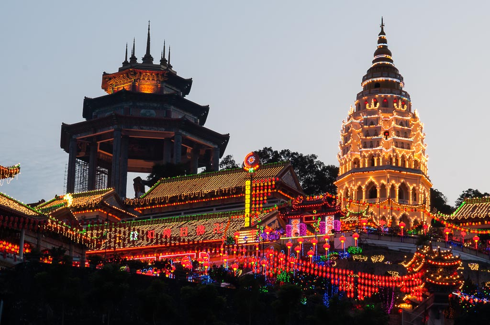
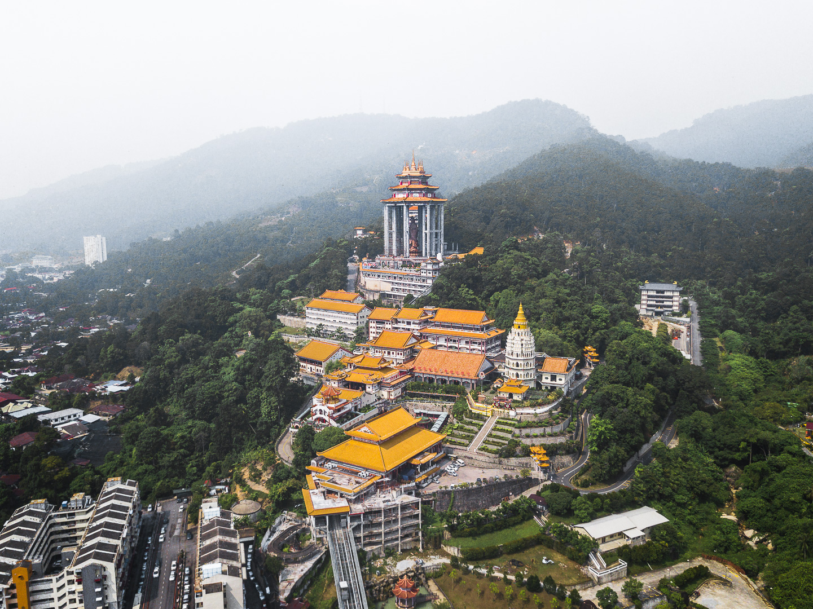

Kek Lok Si Temple
Tour Detail
Jalan Rambutan Ayer Itam 11500 Air Itam Penang
08:00a.m-05:00p.m
08:00a.m-05:00p.m
Description
The Kek Lok Si Temple is a magnificent Buddhist temple complex located in Air Itam, Penang, Malaysia. It is one of the largest and most famous Buddhist temples in Southeast Asia, attracting thousands of visitors each year with its stunning architecture, intricate artwork, and serene atmosphere.Construction of the temple complex began in the late 19th century and continued over several decades, resulting in a blend of architectural styles influenced by Chinese, Thai, and Burmese traditions. The temple is situated on a hillside, with its main structures connected by a series of stairways, covered walkways, and landscaped gardens.
One of the most striking features of the Kek Lok Si Temple is the towering seven-tiered pagoda, known as the Pagoda of Ten Thousand Buddhas. Rising to a height of 30 meters, the pagoda is adorned with colorful ceramic tiles, intricate carvings, and statues of Buddha, making it a prominent landmark visible from afar.
Another highlight of the temple complex is the giant statue of Kuan Yin, the Goddess of Mercy, which stands at the entrance to the temple grounds. This towering statue, reaching a height of 30 meters, is one of the tallest of its kind in the world and is a popular attraction for visitors to the temple.
Throughout the temple complex, visitors can explore various halls, pavilions, and prayer halls adorned with ornate decorations, religious artifacts, and beautiful artwork depicting Buddhist teachings and mythology. The temple grounds also feature scenic viewpoints offering panoramic views of the surrounding hills and coastline.
The Kek Lok Si Temple is not only a place of worship but also a cultural and spiritual landmark that holds significance for Buddhists and visitors of all backgrounds. It serves as a symbol of religious harmony and cultural diversity in Malaysia, reflecting the country's multicultural heritage.
Gallery


